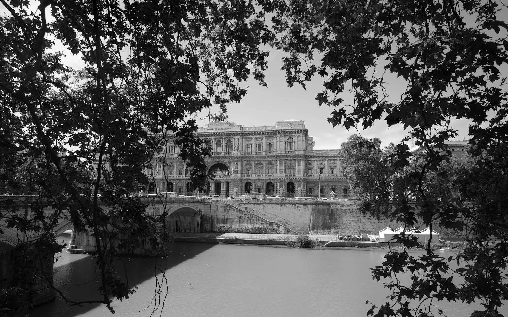

Chi siamo
-

Avv. Antonio Martone
Avvocato cassazionista
Avvocato abilitato all’esercizio avanti alla Suprema Corte di Cassazione e alle altre Magistrature Superiori, è stato magistrato ordinario e componente del CSM.
Curriculum di Avv. Antonio Martone (da ricevere) -

Prof. Avv. Michel Martone
Professore ordinario, Sapienza Università di Roma
Professore ordinario di diritto del lavoro e relazioni industriali presso la Facoltà di Economia della Sapienza Università di Roma, è stato Vice Ministro del Lavoro e delle Politiche Sociali.
Curriculum di Prof. Avv. Michel Martone (da ricevere) -

Avv. Thomas Martone
Socio fondatore e Managing Partner
Avvocato dal 2005, è socio fondatore e Managing Partner dello Studio Legale Martone & Martone.
Curriculum di Avv. Thomas Martone (da ricevere) -

Avv. Gianluca Lucchetti
Avvocato
Avvocato del lavoro dal 2005 e patrocinante dinanzi alle magistrature superiori dal 2018, collabora con lo Studio sin dalla sua costituzione.
Curriculum di Avv. Gianluca Lucchetti (da ricevere) -

Avv. Silvia Fratini
Avvocato
Avvocato dal 2009, ha maturato negli anni una significativa esperienza nella consulenza stragiudiziale e giudiziale in favore di importanti realtà aziendali.
Curriculum di Avv. Silvia Fratini (da ricevere) -

Avv. Arturo Serra
Avvocato
Avvocato dal 2020, ha maturato una significativa esperienza nell’ambito del diritto del lavoro e del diritto civile.
-

Avv. Alessandro Pio Rotondi
Avvocato
Avvocato del foro di Roma, collabora con lo Studio dal 2021.
-

Avv. Flavia Moccia
Avvocato
Avvocato dal 2025, collabora con lo Studio Legale Martone&Martone dal 2023.
-

Dott.ssa Cinzia Giannetti
Ruolo da confermare
Descrizione da ricevere dallo Studio.
-

Sig.ra Cristina Chierchini
Ruolo da confermare
Descrizione da ricevere dallo Studio.
Ritratti segnaposto: saranno sostituiti dalle foto vere.
